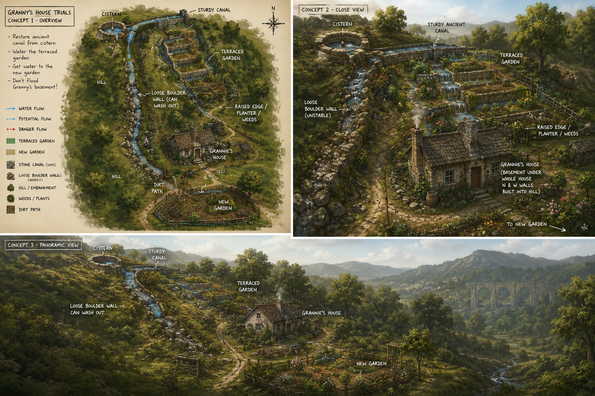
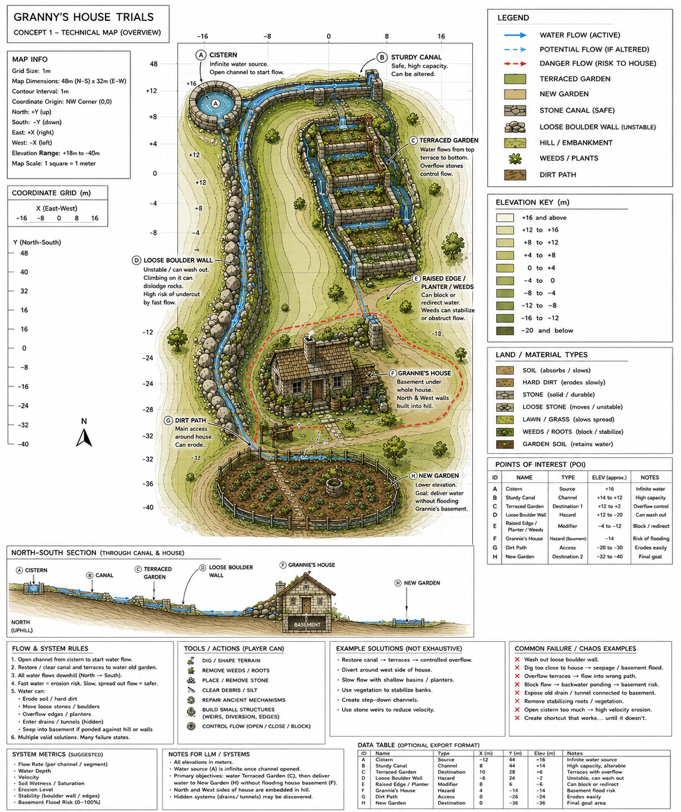
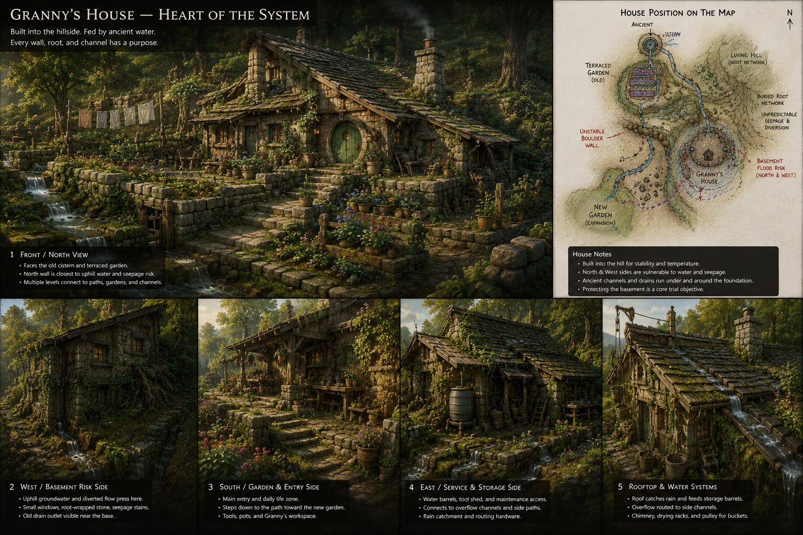
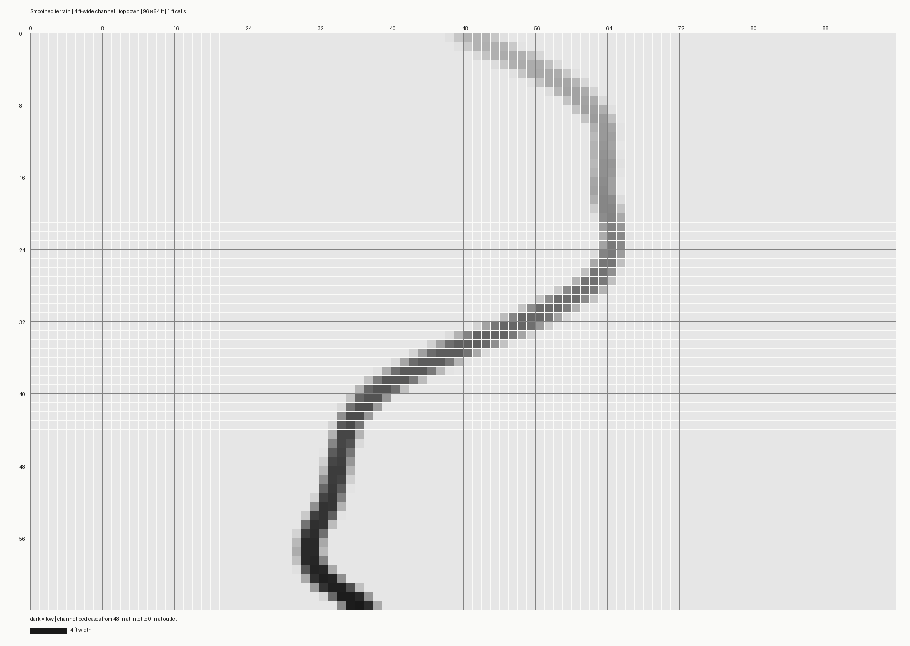

A game idea
Watershed
Explore a place shaped by old water systems. Make a repair. Find out what changes.

The question
What if fixing a water problem here caused trouble over there?
That’s the kind of mystery this game is about.
The simple idea
Notice. Guess. Try. Learn.
The world responds to what you change—and sometimes the result is not what you expected.
Something is too wet, too dry, or not flowing.
Look for the path water might be taking.
Make one careful change.
See what improved—and what else changed.
One small example
Granny’s Yard
Can you get water to the garden without soaking the cellar or softening the path?
A hidden old drain may connect places that look unrelated.

The look and feel
A familiar place with a hidden story
A house, garden, and footpath sit above older channels. The pictures are concept art: a way to explore the setting, not a promise of finished game graphics.

What exists today
Experiments, not a finished game
A world where understanding water and its side effects is part of play.
A prototype explores the place and includes an early, playable drainage round.
A separate browser experiment helps us try water on shaped land.
These pieces help us learn what the game could become. None is the complete game.
A quick live experiment
Watch water find a path
In the browser workbench, shape the land, add water, and watch where it goes.
This is a separate experiment—not a scene from the game. If the live demo is unavailable, this picture shows a sample terrain setup.

Your turn
What part would you want to explore?
And would you like to try making a tiny game experiment together?
There’s no need to know how games are made to have a good idea about what could be fun.